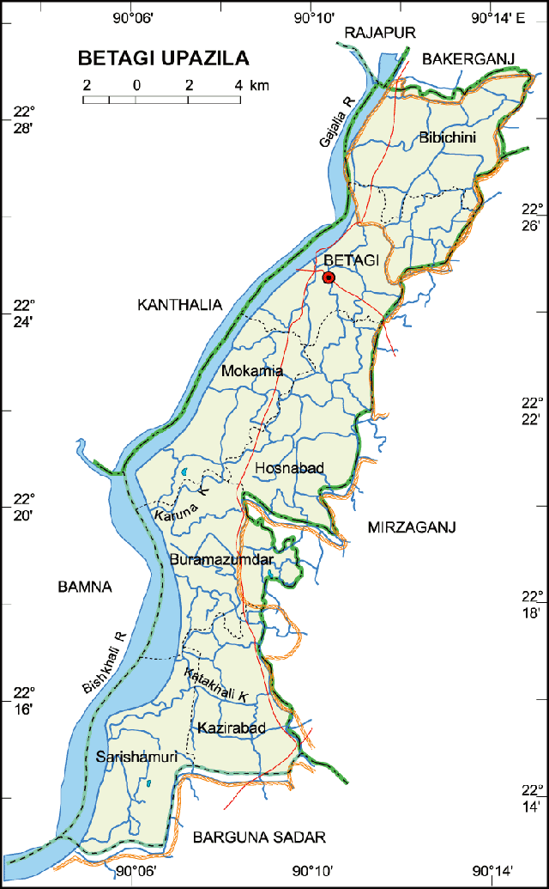

এ জনপদে থানা প্রতিষ্ঠিত হয় ১৯২০ খ্রিস্টাব্দে এবং উপজেলা প্রতিষ্ঠিত হয় ১৯৮৩ খ্রিস্টাব্দে। পূর্বে এ উপজেলাটি ছিল
পটুয়াখালী জেলার অর্ন্তগত।
তখন বরগুনা ছিল মহকুমা। পরবর্তিতে বরগুনা জেলায় উন্নীত হলে বেতাগী উপজেলাটি
বরগুনা জেলার অর্ন্তভুক্ত হয়।
১৬৭.৭৫ বর্গ কিঃমিঃ বা ৬৪.৭৬ বর্গ মাইল
দক্ষিনে-বরগুনা সদর উপজেলা, পূর্বে মির্জাগঞ্জ উপজেলা, উত্তরে বাকেরগঞ্জ উপজেলা ও পশ্চিমে কাঠালিয়া উপজেলা
এই উপজেলা বেশ কয়েক টি ছোট খাটো নদ নালা দ্বারা বেষ্টিত, এ উপজেলার উল্লেখযোগ্য নদী মধ্যে হচ্ছেঃ বিষখালী , ঝোপখালী,
পুরুষ-৫৮,৯১৪
মহিলা-৬২,৮৩৭
মোট-১,২১,৭৫১
পুরুষ- ৩৮২১৩
মহিলা- ৪০৫৬৬
মোট ভোটার সংখ্যা- ৭৮৭৭৯
৭৩ টি।
৫৯ টি।
০৭ টি
পৌরসভার নাম : বেতাগী পৌরসভা
বিবিচিনি শাহী মসজিদ
